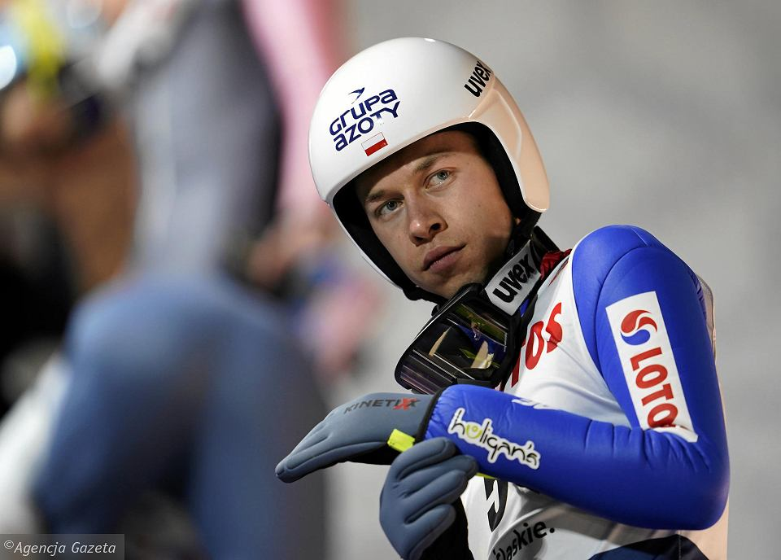
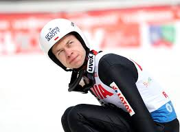
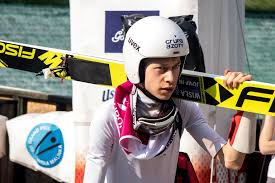

Aleksander Zniszczoł

Aleksander Zniszczoł – reprezentant Polski w skokach narciarskich. Wicemistrz świata juniorów z Erzurum 2012 oraz drużynowy mistrz świata juniorów z Val di Fiemme 2014. Dwukrotny drużynowy srebrny medalista mistrzostw świata juniorów z Erzurum i Liberca. Mistrz Uniwersjady z Trydentu (2013) w konkursie drużynowym na skoczni normalnej. Triumfator letniego Pucharu Kontynentalnego w 2011 roku.
Aleksander Zniszczoł urodził się 8 marca 1994 roku w Cieszynie. Reprezentuje barwy klubu WSS Wisła. 30 grudnia 2011 roku debiutował w Pucharze Świata podczas zawodów w niemieckim Oberstdorfie, zajął 48. miejsce. Swoje pierwsze punkty zdobył 20 stycznia 2012 roku na „Wielkiej Krokwi” w Zakopanem, zajmując wysokie, dziewiąte miejsce, które jest jego najlepszym indywidualnym występem w karierze. 3 marca 2012 roku Zniszczoł stanął na najniższym stopniu podium zawodów Pucharu Świata w Lahti. Reprezentacja Polski w składzie: Aleksander Zniszczoł, Maciej Kot, Klemens Murańka oraz Kamil Stoch zajęła trzecie miejsce w konkursie drużynowym.
Mistrzostwa świata juniorów Złoty medal - Val di Fiemme 2014 (konkurs drużynowy), Srebrny medal - Erzurum 2012 (konkurs indywidualny), Srebrny medal - Erzurum 2012 (konkurs drużynowy), Srebrny medal - Liberec 2013 (konkurs drużynowy), Uniwersjada Złoty medal - Trydent 2013 (konkurs drużynowy na skoczni normalnej), Olimpijski festiwal młodzieży Europy Złoty medal - Liberec 2011 (konkurs drużynowy), Letni Puchar Kontynentalny I miejsce (2011),
Aleksander Zniszczoł studiuje na Akademii Wychowania Fizycznego w Katowicach. 28 maja 2017 roku Poślubił Magdalenę Lazar, siostrę żony innego polskiego skoczka – Piotra Żyły. 6 kwietnia 2018 roku na świat przyszła ich córka, Hanna.